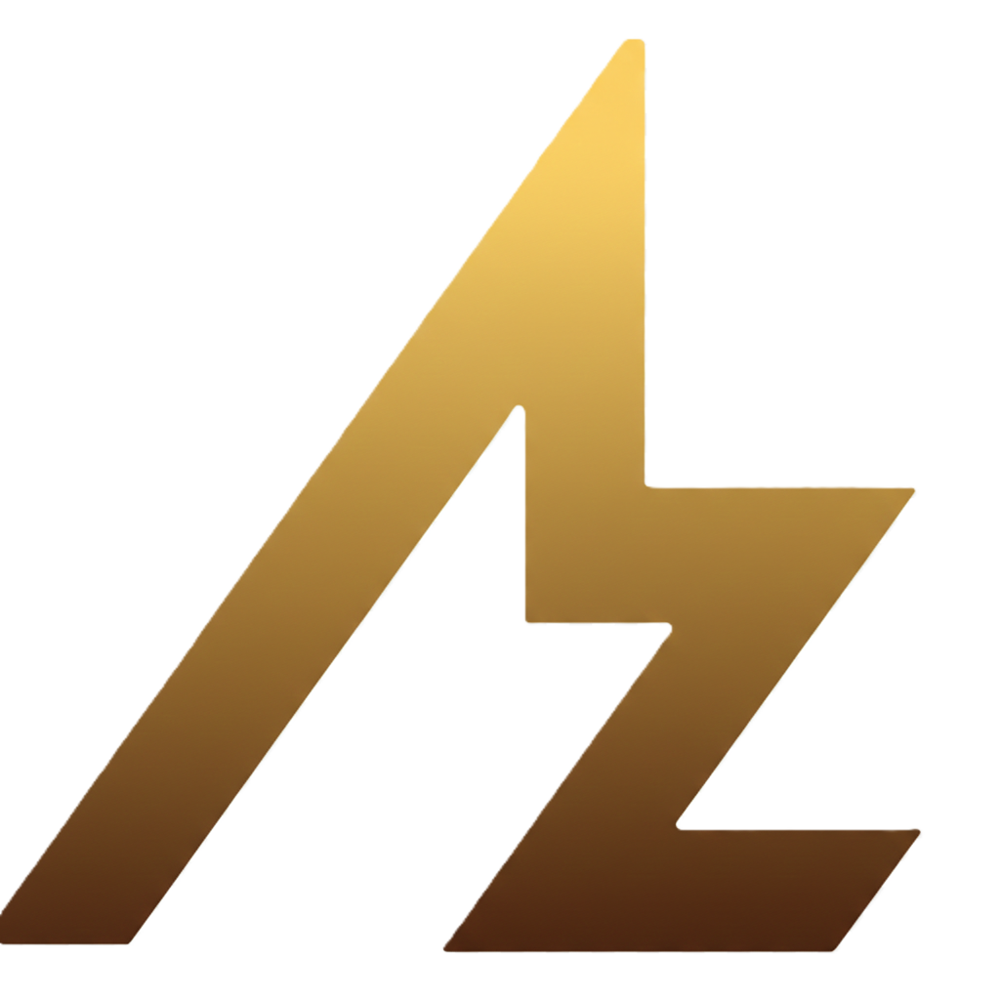

<!-- Navigation -->
<nav>
    <div class="logo">
        
    </div>
    <div class="nav-links">
        <a href="index.html" class="active" data-i18n="nav_home">Home</a>
        <a href="projects.html" data-i18n="nav_projects">Projects</a>
        <a href="about.html" data-i18n="nav_about">About</a>
        <a href="contact.html" data-i18n="nav_contact">Contact</a>
    </div>
    <div class="nav-controls" style="display: flex; align-items: center; gap: 10px;">
        <!-- Theme Toggle -->
        <button id="theme-toggle" class="theme-toggle" aria-label="Toggle Dark Mode">
            <svg class="sun-icon" xmlns="http://www.w3.org/2000/svg" width="24" height="24" viewBox="0 0 24 24"
                fill="none" stroke="currentColor" stroke-width="2" stroke-linecap="round" stroke-linejoin="round">
                <circle cx="12" cy="12" r="5"></circle>
                <line x1="12" y1="1" x2="12" y2="3"></line>
                <line x1="12" y1="21" x2="12" y2="23"></line>
                <line x1="4.22" y1="4.22" x2="5.64" y2="5.64"></line>
                <line x1="18.36" y1="18.36" x2="19.78" y2="19.78"></line>
                <line x1="1" y1="12" x2="3" y2="12"></line>
                <line x1="21" y1="12" x2="23" y2="12"></line>
                <line x1="4.22" y1="19.78" x2="5.64" y2="18.36"></line>
                <line x1="18.36" y1="5.64" x2="19.78" y2="4.22"></line>
            </svg>
            <svg class="moon-icon" xmlns="http://www.w3.org/2000/svg" width="24" height="24" viewBox="0 0 24 24"
                fill="none" stroke="currentColor" stroke-width="2" stroke-linecap="round" stroke-linejoin="round"
                style="display: none;">
                <path d="M21 12.79A9 9 0 1 1 11.21 3 7 7 0 0 0 21 12.79z"></path>
            </svg>
        </button>
        <button class="lang-toggle" aria-label="Toggle Language"
            style="background:none;border:none;color:var(--text-color);font-weight:bold;cursor:pointer;font-family:var(--font-heading);font-size:1.1rem;padding-right:1rem;opacity: 0;">EN</button>
    </div>
    <div class="hamburger">
        <span></span>
        <span></span>
        <span></span>
    </div>
</nav>

<!-- Mobile Menu -->
<div class="mobile-menu">
    <a href="index.html" data-i18n="nav_home">Home</a>
    <a href="projects.html" data-i18n="nav_projects">Projects</a>
    <a href="about.html" data-i18n="nav_about">About</a>
    <a href="contact.html" data-i18n="nav_contact">Contact</a>

    <!-- Mobile Theme Toggle -->
    <button id="mobile-theme-toggle" class="theme-toggle mobile-toggle" aria-label="Toggle Dark Mode">
        <svg class="sun-icon" xmlns="http://www.w3.org/2000/svg" width="24" height="24" viewBox="0 0 24 24" fill="none"
            stroke="currentColor" stroke-width="2" stroke-linecap="round" stroke-linejoin="round">
            <circle cx="12" cy="12" r="5"></circle>
            <line x1="12" y1="1" x2="12" y2="3"></line>
            <line x1="12" y1="21" x2="12" y2="23"></line>
            <line x1="4.22" y1="4.22" x2="5.64" y2="5.64"></line>
            <line x1="18.36" y1="18.36" x2="19.78" y2="19.78"></line>
            <line x1="1" y1="12" x2="3" y2="12"></line>
            <line x1="21" y1="12" x2="23" y2="12"></line>
            <line x1="4.22" y1="19.78" x2="5.64" y2="18.36"></line>
            <line x1="18.36" y1="5.64" x2="19.78" y2="4.22"></line>
        </svg>
        <svg class="moon-icon" xmlns="http://www.w3.org/2000/svg" width="24" height="24" viewBox="0 0 24 24" fill="none"
            stroke="currentColor" stroke-width="2" stroke-linecap="round" stroke-linejoin="round"
            style="display: none;">
            <path d="M21 12.79A9 9 0 1 1 11.21 3 7 7 0 0 0 21 12.79z"></path>
        </svg>
    </button>
    <button class="lang-toggle" aria-label="Toggle Language"
        style="background:none;border:none;color:var(--text-color);font-weight:bold;cursor:pointer;font-family:var(--font-heading);font-size:1.5rem;margin-top:1rem;">EN</button>
</div>